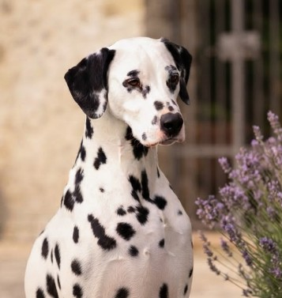
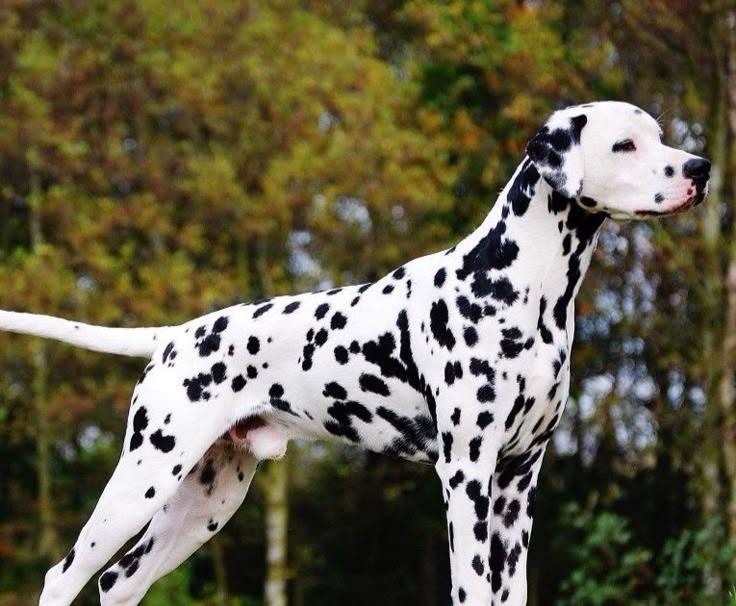
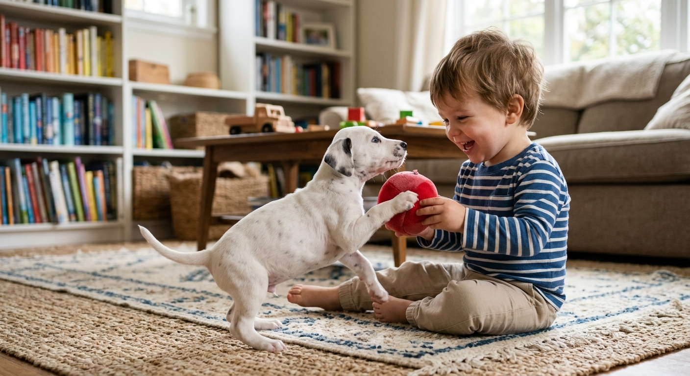
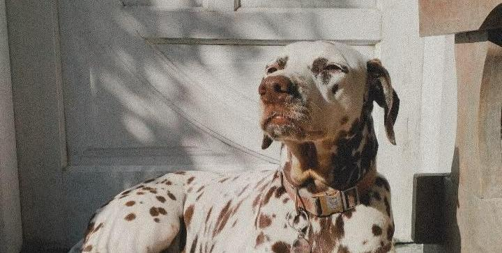

Dalmata
Il Dalmata è una delle razze più affascinanti e riconoscibili al mondo, celebre per il suo elegante mantello bianco costellato dalle macchie nere o marroni.
In passato scortava le carrozze e proteggeva i cavalli; è un atleta nato dal portamento regale. Dotato di un carattere vivace, intelligente e leale, è il compagno perfetto per famiglie dinamiche e persone amanti dell'attività all'aria aperta.
Caratteristiche
Tempo e Routine

Ha bisogno di fare attività fisica costante ed energica.
Cura e Impegno
Il mantello perde molto pelo ed esige controlli di salute precoci.
Valutazione dello spazio
Si adatta all'appartamento se garantito buon esercizio all'aperto.
Maggiori informazioni
Tempo e Routine
Nato per percorrere chilometri dietro alle carrozze, possiede un'elevata riserva di energia. Ha bisogno di camminare, correre, svolgere attività sportive o passeggiate prolungate per mantenere un carattere sereno ed equilibrato.
Cura e Impegno
Il pelo corto è facile da spazzolare, ma fa una muta continua durante tutto l'anno. Occorre porre attenzione alla predisposizione genetica alla sordità ereditaria e monitorare l'alimentazione per la produzione di calcoli urinari.
Valutazione dello spazio
Si adatta senza problemi alla vita in casa o in appartamento a patto di effettuare uscite e corse giornaliere frequenti. La presenza di un giardino rappresenta uno sfogo utile, ma non sostituisce le uscite insieme alla famiglia.
Pro e Contro
✓ Per chi è ideale
- Aspetto inconfondibile ed eccezionale eleganza
- Compagno instancabile per persone e famiglie molto attive
- Indole giocosa, affettuosa e legatissima alla famiglia
▲ Cosa tenere a mente
- Si raccomanda test precoce per la sordità congenita
- Può diventare distruttivo o nervoso se non fa sufficiente attività fisica
- Perdita continua di pelo raso e fitto su mobili e vestiti
Momenti ed espressioni



Palette di colori
